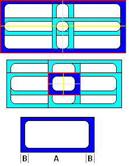

<?php 
$title="Yahoo! UI Library: ProgressBar";
$section="progressbar";
$component="ProgressBar Control";
$highlightSyntax = true;
$releasenotes = true;
include "../inc/header.inc";
?>

<div id="yui-main">
<div class="yui-b">
  <div class="yui-ge">
      <div class="yui-u first">

  <div id="promo" class="component">
	<h1>Yahoo! UI Library: ProgressBar</h1>

<p>The YUI ProgressBar Control provides a visual means of showing progress of an on going operation.  
The ProgressBar can be enhanced via CSS styles to provide different colors, shapes and textures.
The bar can move horizontaly or vertically, back and forth.  The movement can be softened by using the Animation utility.
A textual representation of the bar can be displayed, which is also available for WAI-ARIA screen readers.

    <div></div>
   <div>
    <h4>On This Page:</h4>
    <ul>
      <li><a href="#start">Getting Started</a></li>
	  <li><a href="#using">Using ProgressBar</a> </li>
      <li><a href="#knownissues">Known Issues</a></li>
      <li><a href="#mobile">YUI on Mobile Devices</a></li>
      <li><a href="#support">Support &amp; Community</a></li><li><a href="#filingbugs">Filing Bugs and Feature Requests</a></li>
    </ul>
  </div>

<?php
include('../inc/quicklinks.inc');
?>

  </div>

  <h2><a name="start"></a>Getting Started</h2>
<p>
To use the ProgressBar control include the following source files in your web page:
</p>

<pre><textarea name="code" class="HTML" cols="60" rows="1">
<!-- Required CSS -->
<link type="text/css" rel="stylesheet" href="http://yui.yahooapis.com/<?php echo($yuiCurrentVersion);?>/build/progressbar/assets/skins/sam/progressbar.css">

<!-- Dependency source file --> 
<script src = "http://yui.yahooapis.com/<?php echo($yuiCurrentVersion);?>/build/yahoo-dom-event/yahoo-dom.event.js" ></script>
<script src = "http://yui.yahooapis.com/<?php echo($yuiCurrentVersion);?>/build/element/element-min.js" ></script>
<!-- Optional dependency source file --> 
<script src="http://yui.yahooapis.com/<?php echo($yuiCurrentVersion);?>/build/animation/animation-min.js" type="text/javascript"></script>

<!-- ProgressBar source file --> 
<script src = "http://yui.yahooapis.com/<?php echo($yuiCurrentVersion);?>/build/progressbar/progressbar-min.js" ></script>
  </textarea></pre>
  <?php
include "../inc/include-notice.inc";
?>

  <p>The ProgressBar control is defined by YAHOO.widget.ProgressBar, which extends YAHOO.util.Element.</p>
  <h3>Creating the Tree </h3>

	<p>
	Create a progress bar by instantiating ProgressBar with optional configuration attributes and then 
	rendering into the element that will contain it:
	</p>

<pre><textarea name="code" class="JScript" cols="60" rows="1">
var progressBar = new YAHOO.widget.ProgressBar();
progressBar.render("pbContainer");
</textarea></pre>

	<p>
    You can supply initial configuration attributes. The render method is chainable so you can do all in one step:
	</p>

<pre><textarea name="code" class="JScript" cols="60" rows="1">
var progressBar = new YAHOO.widget.ProgressBar({width:"300px"}).render("pbContainer");
</textarea></pre>
<p>
The ProgressBar defaults to a simple blue bar moving from left to right.
If the SAM skin is used it will show a color scheme compatible with other YUI components.  
The direction of movement can be changed up to the moment it is rendered.
It can go from right to left or vertically from top to bottom or bottom to top.  
To create a ProgressBar moving from bottom to top, any of the following two segments can be used:
</p>
<pre><textarea name="code" class="JScript" cols="60" rows="1">
var progressBar = new YAHOO.widget.ProgressBar({direction:"btt",height:"150px",width:"30px"}).render("pbContainer");

// or... 

var progressBar = new YAHOO.widget.ProgressBar();
progressBar.set("direction","btt");
progressBar.set("height","150px");
progressBar.set("width","30px");
progressBar.render("pbContainer");

</textarea></pre>

  <p>See the examples below in <a href="#using">Using ProgressBar</a> or the <a href="../docs/module_progressbar.html">API Documentation</a> for more details.</p>

<h2>Using ProgressBar<a name="using"></a></h2>

  <p>This section describes several common uses and customizations of ProgressBar and contains these sections: </p>
  <ul>
  <li><a href="#moving">Moving the Bar</a></li>
  <li><a href="#animation">Animating the Bar</a></li>
  <li><a href="#style">Setting Up your Style Definitions</a></li>
  <li><a href="#events">Responding to Events </a></li>
  <li><a href="#caption">Captioning</a></li>
  <li><a href="#aria">WAI-ARIA support</a></li>
  <li><a href="#mask">Scaling of the mask</a></li>
  </ul>

<h3>Moving the Bar <a name="moving"></a></h3>
<p>The length of the bar represents the value of the <code>value</code> configuration attribute.  
It is scaled so that the initial edge of the bar (on a bar with <code>direction</code> set to <code>'ltr'</code> it would be the left edge)
represents the minimum value set via the <code>minValue</code> configuration attribute and the end edge is set to <code>maxValue</code>.  
The <code>value</code> and range attributes are plain numbers in arbitrary units, 
the ProgressBar scales them to and from actual pixel values.
<pre><textarea name="code" class="JScript" cols="60" rows="1">
// This bar would show with the bar half way
var progressBar = new YAHOO.widget.ProgressBar({minValue:60,maxValue:90,value:75,height:150,width:30}).render("pbContainer");

// This would move it one third on the left
progressBar.set('value',70); 

// This is out of range, it will be ignored
progressBar.set('value',100); 

// value is still 70
alert(progressBar.get('value'));  // should show 70
</textarea></pre>

<h3>Animating the Bar<a name="animation"></a></h3>
<p>If the Animation utility is loaded, the ProgressBar can use it to move the bar.  
To enable it the <code>anim</code> configuration attribute has to be set to true.
This attribute accepts either a boolean to enable/disable animation or an instance of
<code>YAHOO.util.Anim</code>.   When read, <code>anim</code> will return the instance
of the Animation object created or <code>null</code> if there is none.  
The properties of the Animation object can then be changed to set the behavior of the bar,
most often <code>duration</code> and the easing <code>method</code>. 
The following code makes the movement
last for 3 seconds and bounce both at the start and end of the movement.</p>
<pre><textarea name="code" class="JScript" cols="60" rows="1">
var progressBar = new YAHOO.widget.ProgressBar({anim:true}).render('pbContainer');
var anim = progressBar.get('anim');
anim.duration = 3;
anim.method = YAHOO.util.Easing.bounceBoth;
</textarea></pre>
  


<h3>Setting Up your Style Definitions <a name="style"></a></h3>
<p>
The ProgressBar component makes use of several CSS classes to style the bar.  You
  can either use the CSS provided in the download source, or you can create your
  own. If you create your own, you'll need to use the classNames the ProgressBar assigns to its elements.
</p>
<table>
<tr><th>Selector</th><th>Attribute</th><th>Description</th></tr>
<tr><td style="white-space:nowrap;">.yui-pb</td><td>width<br/>height</td><td>overall size of the ProgressBar.  It can also be set via the <code>width</code> and <code>height</code> configuration settings</td></tr>
<tr><td style="white-space:nowrap;">.yui-pb</td><td>background-image<br/>background-color</td><td>background to be used on the area the bar is not covering</td></tr>
<tr><td style="white-space:nowrap;">.yui-pb</td><td>border</td><td>border around the component</td></tr>
<tr><td style="white-space:nowrap;">.yui-pb-bar</td><td>background-image<br/>background-color</td><td>Image or color to use for the bar itself</td></tr>
<tr><td style="white-space:nowrap;">.yui-pb-bar</td><td>margin</td><td>offset from the edge of the ProgressBar to where the transparency of the mask starts.</td></tr>
<tr><td style="white-space:nowrap;">.yui-pb .yui-pb-anim</td><td>background-image<br/>background-color</td><td>Image or color to use for the bar while it is moving.</td></tr>
<tr><td style="white-space:nowrap;">.yui-pb-mask div</td><td>background-image</td><td>mask with transparencies to allow the bar to show through</td></tr>
<tr><td style="white-space:nowrap;">.yui-pb-caption</td><td>font and others</td><td>this style is not actually used by the ProgressBar, 
		but is is defined in the SAM skin to be used to display the value of the bar</td></tr>
<tr><td style="white-space:nowrap;">.yui-pb-range</td><td>font and others</td><td>this style is not actually used by the ProgressBar, 
		but is is defined in the SAM skin to be used to display the end values of the bar</td></tr>
</table>
<p>The elements that constitute the ProgressBar are stacked one on top of the other. 
They are accesible through configuration attributes which allows further styling, possibly dynamic.
The attributes allowing access to the DOM elements are read-only.
The following table enumerates the three layers, their classNames and attribute names:</p>
<table>
<tr><th>className</th><th>Attribute Name</th><th>Description</th><th>z-index</th></tr>
<tr><td>yui-pb</td><td>element</td><td>the container of the ProgressBar itself</td><td>0 (bottom)</td></tr>
<tr><td>yui-pb-bar</td><td>barEl</td><td>the moveable bar</td><td>1</td></tr>
<tr><td>yui-pb-mask</td><td>maskEl</td><td>the mask that may partially cover the bar</td><td>2</td></tr>
</table>

<p>To let the bar be seen through the mask that covers it, the mask has to have transparencies, a PNG or GIF file with transparency works. 
Since the opaque areas of the mask will hide some areas of the ProgressBar, you don't want the bar to move under those opaque areas, 
you want the zero (actually, the <code>minValue</code>) to start right at the transparent section and likewise you don't want it
to reach beyond the transparency on the end edge.  Thus, when using masks that take some space at either end, it is 
necessary to set the margins on the bar itself (<code>.yui-pb-bar</code>).</p>

<p>Since the ProgressBar derives from Element, all the methods inherited from Element apply to the main container for the widget.
If we were to set the color of the background and the bar via code, we can do it like this:</p>

<pre><textarea name="code" class="JScript" cols="60" rows="1">
// background, using Element's method
progressBar.setStyle('backgroundColor','green');
// or accessing the DOM element first and using regular methods
YAHOO.util.Dom.setStyle(progressBar.get('element'),'backgroundColor','green');

// bar, not an Element, regular methods have to be used
YAHOO.util.Dom.setStyle(progressBar.get('barEl'),'backgroundColor','yellow');
</textarea></pre>

<p>The ProgressBar has a predefined style for the SAM skin (<code>yui-skin-sam</code>).  Since this style is often set
at the document body, if you want to customize a particular ProgressBar while retaining the skin for other elements in the page,
these are the style definitions that will cancel those preset styles where <code>#myProgressBar1</code> represents the id 
of the ProgressBar that is to be styled differently.</p>

<pre><textarea name="code" class="CSS" cols="60" rows="1">
.yui-skin-sam #myProgressBar1 .yui-pb  {
	background-color:transparent;
	background-image:none;
	border:none;
}

.yui-skin-sam #myProgressBar1 .yui-pb-bar {
	background-color:transparent;
	background-image:none;
}

.yui-skin-sam #myProgressBar1 .yui-pb-mask {
	border:none;
	margin:0;
}
</textarea></pre>


<h3>Responding to Events <a name="events"></a> </h3>
<p>
The ProgressBar inherits from the Element utility the before and after change events for any of its 
configuration attributes thus, there is, for example, a <code>beforeMinValueChange</code> and a <code>minValueChange</code>.
The before event listeners can return false to reject the change.  They both receive the old and new values 
for the corresponding attribute.</p>
<p>The ProgressBar adds three events that signal the movement of the bar.  The <code>start</code> event
will be fired right before the bar is about to move.  The <code>progress</code> event fires at least
once in between.  If animation is enabled, it will fire as many times as the Animation
fires its own <code>onTween</code> event but it will scale the pixel value of the bar to a value 
in whichever units the implementer has set.  Finally, the <code>complete</code> event
fires when the bar reaches its set value.  All three receive as its single argument the actual
value that the bar represents at the instant they fire. For consistency, the <code>progress</code> event
will fire only once when animation is not enabled.</p>

<h3>Captioning<a name="caption"></a></h3>
<p>The ProgressBar does not directly handle captioning, however using the motion or attribute change events,
any of its settings can be shown in any container.  For a consistent look when using the SAM skin,
the classNames <code>yui-pb-caption</code> and <code>yui-pb-range</code> have been defined to be used
in the containers for the current value and the end values respectively. The following code shows
how the current, possibly changing <code>value</code> and the <code>minValue</code> can be shown in their respective containers:</p>

<pre><textarea name="code" class="JScript" cols="60" rows="1">
progressBar.on('progress',function (value) {
	YAHOO.util.Dom.get('valueContainer').innerHTML = value;
});

progressBar.on('minValueChange',function(oArgs)  {
	YAHOO.util.Dom.get('minValueContainer').innerHTML = oArgs.newValue;
});</textarea></pre>


<h3>WAI-ARIA support<a name="aria"></a></h3>
<p>The ProgressBar supports WAI-ARIA as specified for the "progressbar" role, see: <a href="http://www.w3.org/TR/wai-aria/#progressbar">W3C spec</a>.
The ProgressBar container has <code>tabIndex="0"</code> and has <code>role</code> and role-specific settings as described in the document.</p>
<p>Since the ProgressBar cannot know what concept the value corresponds to, it cannot, on its own, provide a meaningful <code>aria-valuetext</code>
text.  The <code>ariaTextTemplate</code> configuration attribute allows the implementer to set the template to be used for that attribute.</p>
<pre><textarea name="code" class="JScript" cols="60" rows="1">
var progressBar = new YAHOO.widget.ProgressBar({
	ariaTextTemplate:'We are at {value} in between {minValue} and {maxValue}'
}).render('progressBarContainer');
</textarea></pre>
<p>The ProgressBar will produce a text assembled via YAHOO.lang.substitute from the template in the <code>ariaTextTemplate</code> configuration attribute.
The ProgressBar makes the values of the <code>value</code>, <code>minValue</code> and <code>maxValue</code> available for <code>substitute</code>
to use in the placeholders in the template.</p>

<h3>Scaling of the mask<a name="mask"></a></h3>

<p>The normal mechanism for scaling images in a browser is not acceptable for scaling the mask.
Masks are usually thin frames around the bar, often with small single pixel-wide features.
With normal scaling, these features might be lost. Instead, the ProgressBar cuts the mask into 
four quadrants.</p>

<div style="clear:both;float:left;margin:1em;"></div>
<p>This set of diagrams show how the mask image is used. 
The blue sections enclosed in red at the top two images show a couple of masks of very different sizes, both made of the very same base image, 
which is shown below.</p>
<p>The red line outlines the container used to hold the mask which is of the same size as the overall ProgressBar.  
The container holds four quadrants of 50% width and height, marked by the yellow lines.</p>

<p>The same mask image is set as the background for each of the four individual quadrants but instead of letting it tile normally, 
we use the <code>background-position</code> CSS attribute so each is aligned to its own external corner.  The blue area shows the corner section of the mask image that 
is visible in each quadrant, enclosed in between the ProgressBar edge in red and the edges of the quadrants in yellow, 
the light blue areas are the parts of the same image that fall outside of the quadrants and are invisible.</p>
<p>If the top ProgressBar were to be stretched a little more, the now invisible edges opposite each visible corner would start to show.  
On the other hand, if the lower ProgressBar were to be reduced, the yellow lines would start eating into the rounded inner corners and 
the inner contour would not blend but meet at an angle.</p>
<p>If we call <b>A</b> the length of the straight section of each edge and 
<b>B</b> the length of the section from the edge until the rounded inner corner meets the straight section so that
the width of the original mask is <b>A + 2 *  B</b>, we can use that image as a mask for any ProgressBar that is at
least <b>2 * B</b> on the side (no straight section visible) to <b>2 * A + 2 * B</b> (the straight sections are seen twice, once
in each contiguous cell).</p>


<h2 id="knownissues">Known Issues</h2>
<p>The ProgressBar is affected by the bug: <a href="https://bugs.webkit.org/show_bug.cgi?id=27161">"JS positioned elements get misplaced on zooming"</a> 
on Safari 4 and other recent WebKit derivatives.</p>

<?php include "../inc/mobileSection.inc"; ?>

<p>ProgressBar is functional in the target mobile browsers.</p>

<?php include "../inc/support.inc"; ?>

		</div>
         <div class="yui-u">
		 	
			<div id="cheatsheet">
				<h3>ProgressBar Control Cheat Sheet:</h3>
				
				<a href="http://yuiblog.com/assets/pdf/cheatsheets/progressbar.pdf"></a>
				
				<p><a href="/yui/docs/assets/cheatsheets.zip">Download full set of cheat sheets.</a></p>
			</div>
			
			<div id="examples">
<?php 
	include("../inc/examplesNav/".$section.".inc");
?>
           </div>
	 
			<div id="morereading">
				<h3>More Reading about the YUI ProgressBar Control:</h3>
				
				<ul>
				  <li><a href="http://yuiblog.com/blog/2006/08/02/dynamic_loading/">Basic Features</a>, by Eric Miraglia</li>
				  <li><a href="http://yuiblog.com/sandbox/yui/v0113/examples/treeview/dyn_ld.php">ProgressBar Example: Dynamic Load, Using <code>node.onLabelClick</code> and <code>node.data</code></a>, by the YUI Team</li>
				  <li><a href="http://yuiblog.com/sandbox/yui/v0121/examples/treeview/scrolling.php">ProgressBar Example: ProgressBar and Horizontal Scrolling</a>, by the YUI Team</li>
			   </ul>
		   </div>
		   
<?php 
$thisURI="http://developer.yahoo.com/yui/progressbar/";
require_once('../inc/badge.inc');
?>
<h3 id="delicious">YUI ProgressBar on del.icio.us:</h3>
<div class="delicious">
<?php require('../inc/badge-html.inc'); ?>
</div>

		 </div>
      </div>

</div>
</div>

<?php include "../inc/side.inc" ?>
<?php include "../inc/footer.inc" ?>

